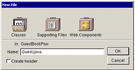
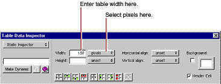
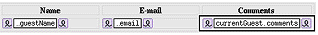
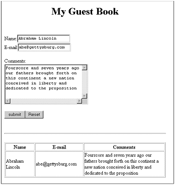

| PATH |

In "Creating a WebObjects Application Project", you created individual variables to store a guest's name, e-mail address, and comments. When keeping track of multiple guests, it's more useful to encapsulate all the data for a guest as a single entity. You'll do this by creating a Java class that contains the data for a single guest.

The newly created file contains a skeleton for a class called Guest.
// Guest.java created by ...
import com.webobjects.foundation.*; import com.webobjects.eocontrol.*;
import com.webobjects.eoaccess.* import com.webobjects.appserver.*;
public class Guest extends Object { protected String guestName; protected String email; protected String comments;
Guest() { guestName = ""; email = ""; comments = ""; }
}A
class stores information in its instance variables (also
referred to as data members). Here you're
declaring three instance variables for Guest: guestName, email,
and comments. Note that
these declarations are the same as those that appeared in the code
for Main.java when you
added the three variables using WebObjects Builder. In WebObjects,
a component is also a class, specifically a subclass of the class WOComponent.
Java classes require a constructor to initialize an instance (or object) of a particular class whenever one is created. A constructor has the same name as the class and returns no value.
Whenever your application creates a new Guest object, its instance variables are initialized with empty strings. (If you prefer, you can use different strings for these initial values.)
Guest.java by
choosing Save from the File menu. Saving the file lets WebObjects Builder know about your newly created Guest class.
In "Creating a WebObjects Application Project", you bound the input elements to variables in Main's code. Now you'll modify the bindings to use the class you just created.
Main.wo in
the second column of the browser to open the component in WebObjects
Builder.currentGuest to
your component and specify its type as Guest. (Note that you can
now choose Guest from the Type combo box.) An entry for currentGuest appears
in the object browser. Notice the ">" symbol to the right
of its name. This means that there is additional data to be displayed
in the second column.
currentGuest in
the object browser.The second column displays the three fields
of currentGuest, as determined
by the definition of its class, Guest.
guestName in
the second column of the object browser (next to currentGuest)
to the Name text field (press the mouse button down on the variable, drag
to the element, and release the mouse button), and click value in
the pop-up menu.This time, when the pop-up menu appears, there
is a dot next to the value attribute because
you bound it in the first tutorial.
currentGuest.email and currentGuest.comments.In the first chapter, you created three WOString elements to display the information the guest entered. In this tutorial, you'll create a different type of element, an HTML table, to display the information. In later tasks, you'll display data for multiple users in the table.
![[image: ../Art/table.gif]](../Art/table.gif) button.
button.The New Table panel appears. On the right is the Preview pane, which displays what your table will look like.
![[image: ../Art/tablepanel.gif]](../Art/tablepanel.gif)
The Inspector presents a number of modifiable settings that apply to the table cell you've selected.

The width of the column is set to 150 pixels.
Pressing Tab when editing a table causes the contents of the next cell to the right to be selected (or the first cell of the next row if in the rightmost column). Pressing Shift-Tab moves in the opposite direction through the table.
Note: It isn't necessary to adjust the height of the columns-if left unset, they'll expand at runtime to accommodate the size of the text being displayed. |
Tables and cells are static HTML elements, so you can't bind them to variables or methods. To display dynamic information in cells, you add dynamic elements, such as WOStrings, to the cells.
![[image: ../Art/wostring.gif]](../Art/wostring.gif) to
add a WOString to the cell.
to
add a WOString to the cell.The contents of the next cell to the right are selected.
currentGuest.guestName in
the object browser to the center of the WOString in the first column
to bind its value attribute. currentGuest.email and currentGuest.comments to
the WOStrings in the second and third columns.The table should now look like this:

Earlier in this chapter, you created a Java class of type
Guest and wrote a constructor for it. You also added a variable
of that class, currentGuest,
to the Main component. However, adding a variable to the component
doesn't actually create a new Guest object; you need to create
one explicitly at some point in your code.
You'll create the Guest object in the constructor method for your component. This method is called when the component is first created; that is, the first time the user accesses the component.
Project
Builder becomes active and displays the code for Main.java.
Notice the following declaration that was added to your code when
you added the currentGuest variable:
protected Guest currentGuest;
guestName, email,
and comments since you
aren't using them anymore. public Main(WOContext context) { super(context); currentGuest = new Guest(); }The first
statement calls the constructor of Main's superclass (which is com.webobjects.appserver.WOComponent).
The second statement allocates a new empty Guest object and calls
Guest's constructor to initialize its instance variables.
Main.java.The application should work similarly to that in the first chapter, except that the guest's data is displayed in a table at the bottom of the page instead of as plain text.

At this point, your application still handles information from a single guest only; in "Keeping Track of Multiple Guests", you'll modify the application so that it can keep track of multiple guests.
© 2001 Apple Computer, Inc.